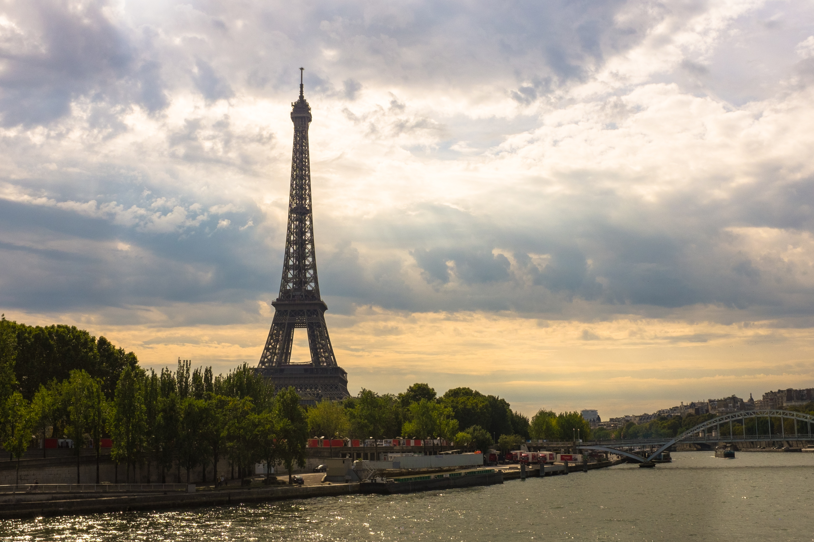
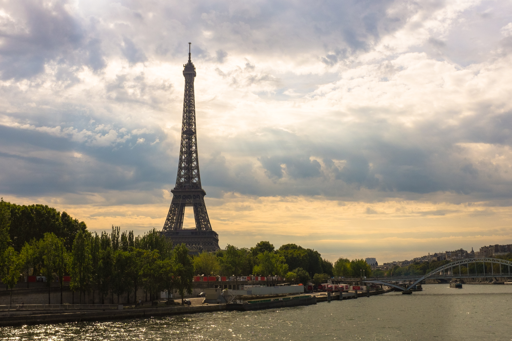
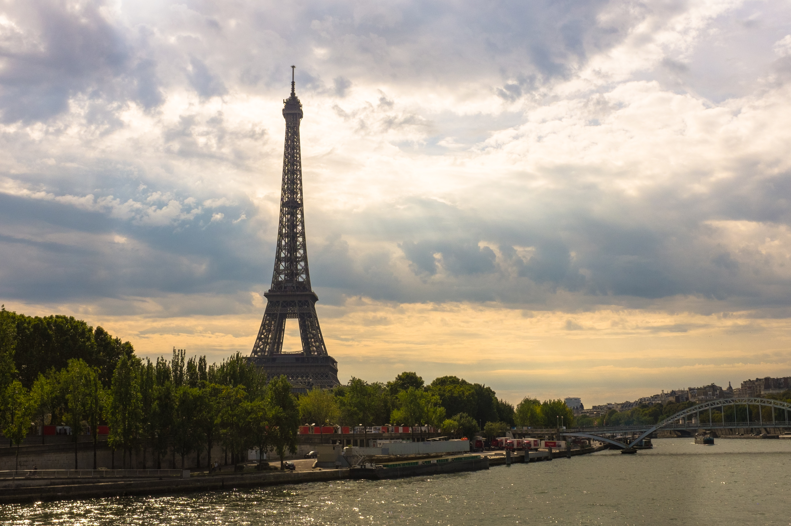
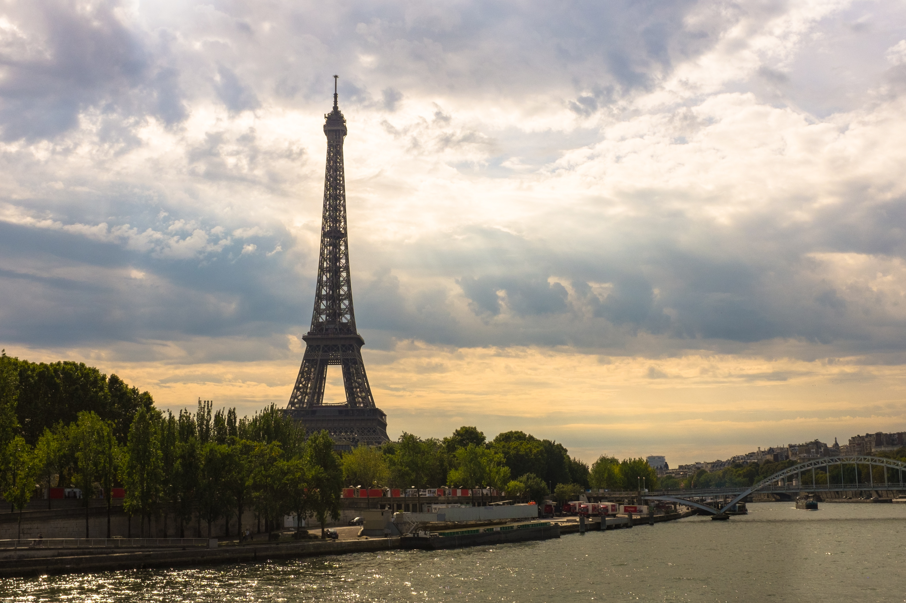

 

Denna sida är om olika platser i värden och innehåller bilder och filmer från dom platserna. Detta är för att du ska kunna bilda din egna åsikt om dessa platser och gör kanske att du vill resa till dom i framtiden.